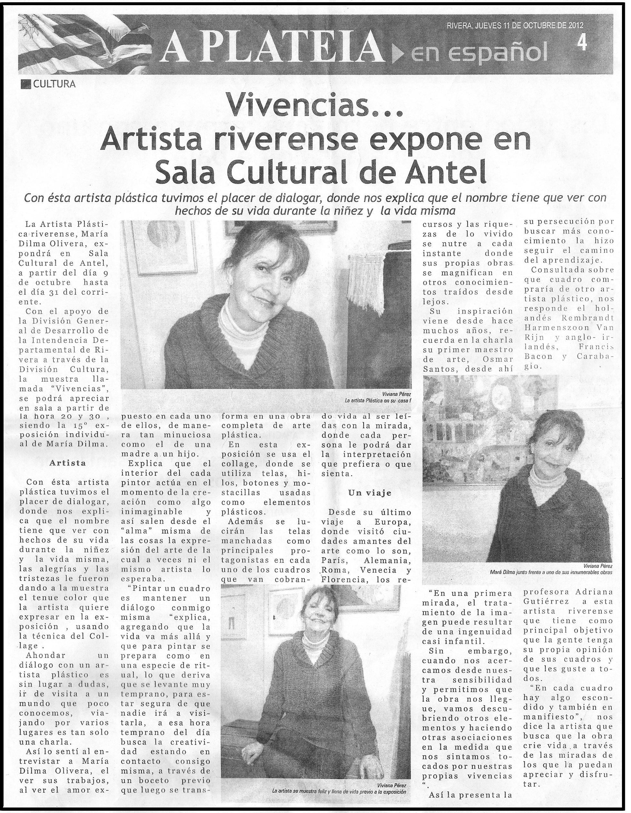
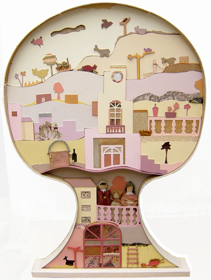
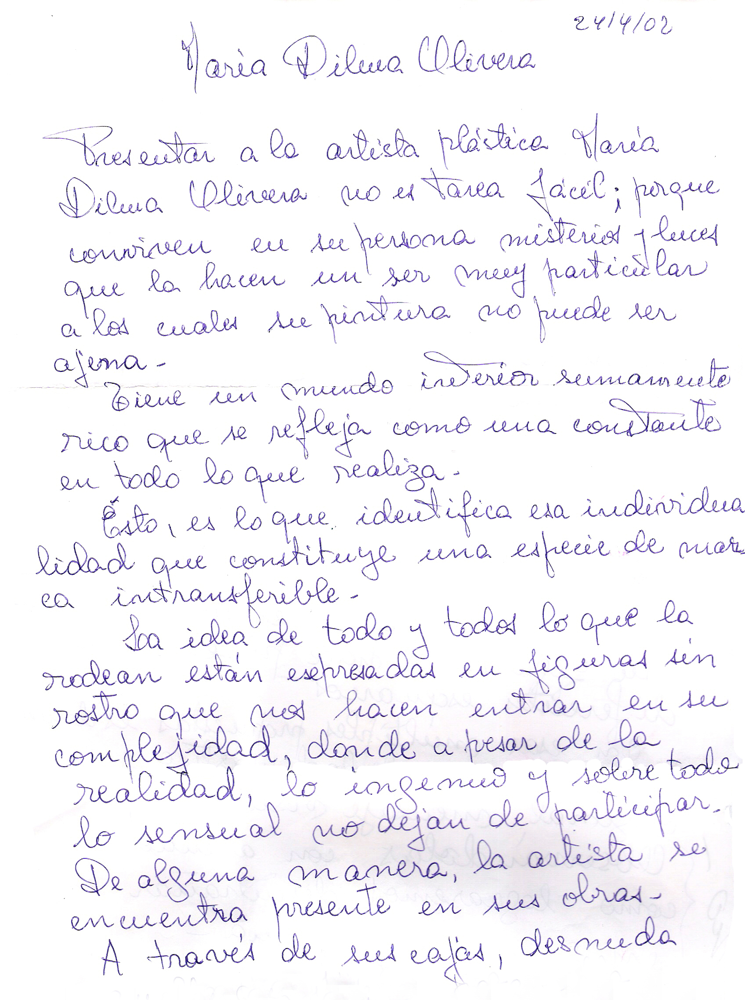

María Dilma Olivera Comentarios
Diario El País
13 de julio de 1997
Museo Rivera y Sala Figari
Por Elisa Rouband
Original la obra presentada por María Dilma Olivera, armando con cartones la fachada de una casa, recortando figuras humanas que se disponen en los balcones y en distintos planos, creando un espacio casi lúdico para la composición, recordando los juegos con las casas de muñecas esta vez en la recreación de la realidad de la vida ciudadana.
A PLATÉIA
Miércoles 31 de octubre de 2001
El Mirador de Próspero
Por Martín Correa
La sensibilidad artística de María Dilma Olivera, con una selecta presentación de sus obras, son el marco saliente de esta semana, en la Sala Cultural de Antel.
Entre las figuras de relieve que enriquecen el panorama regional fronterizo María Dilma demuestra cabalmente, que la tenacidad unida al factor vocacional, se constituyen en principios lógicos para alcanzar objetivos que forman el engranaje fundamental de sus pinturas. Dentro de esta dinámica, sin apartarse de la realidad y las cosas naturales pero con profundo contenido donde vuelca sus sentimientos, impulsándolos desde distintos ángulos, hasta conformar sus ideas y voluntades de vanguardia...

A PLATÉIA
Rivera, jueves 11 de octubre de 2012
Vivencias… Artista riverense expone en Sala Cultural de Antel
Por Viviana Pérez
Con esta artista plástica tuvimos el placer de dialogar, donde nos explica que el nombre tiene que ver con hechos de su vida durante la niñez y la vida misma
La artista plástica riverense, María Dilma Olivera, expondrá en Sala Cultural de Antel, a partir del día 9 de octubre hasta el día 31 del corriente.
Con el apoyo de la División General de Desarrollo de la Intendencia Departamental de Rivera a través de la División Cultura, la muestra llamada “Vivencias”, se podrá apreciar en sala a partir de la hora 20 y 30 siendo la 15ª exposición individual de María Dilma.
Artista
Con esta artista plástica tuvimos el placer de dialogar, donde nos explicó que el nombre tiene que ver con hechos de su vida durante la niñez y la vida misma, las alegrías y las tristezas le fueron dando a la muestra el tenue color que la artista quiere expresar en la exposición, usando la técnica del collage. Ahondar un diálogo con un artista plástico es sin lugar a dudas, ir de visita a un mundo que poco conocemos, viajando por varios lugares en tan sólo una charla.
Así lo sentí al entrevistar a María Dilma Olivera, al ver sus trabajos, el amor expuesto en cada uno de ellos, de manera tan minuciosa como el de una madre a un hijo.Explica que el interior de cada pintor actúa en el momento de la creación como algo inimaginable y así salen desde el “alma” misma de las cosas la expresión del arte de la cual a veces ni el mismo artista lo esperaba. “Pintar un cuadro es mantener un diálogo conmigo misma” explica, agregando que la vida va más allá y que para pintar se prepara como en una especie de ritual, lo que deriva que se levante muy temprano, para estar segura de que nadie irá a visitarla, a esa hora temprano del día busca la creatividad estando en contacto consigo misma, a través de un boceto previo que luego se transforma en una obra completa de arte plástica.
En esta exposición se usa el collage, donde se utiliza telas, hilos, botones y mostacillas usadas como elementos plásticos.
Además se lucirán las telas manchadas como principales protagonistas en cada uno de los cuadros que van cobrando vida al ser leídas con la mirada, donde cada persona le podrá dar la interpretación que prefiera o que sienta.
Un viaje
Desde su último viaje a Europa, donde visitó ciudades amantes del arte como lo son París, Alemania, Roma, Venecia y Florencia, los recursos y las riquezas de lo vivido se nutren a cada instante donde sus propias obras se magnifican en otros conocimientos traídos desde lejos.
Su inspiración viene desde hace muchos años, recuerda en la charla su primer maestro de arte, Osmar Santos, desde ahí su persecución por buscar más conocimiento la hizo seguir el camino del aprendizaje.
Consultada sobre qué cuadro compraría de otro artista plástico, nos responde el holandés Rembrandt Harmenszoon Van Rijn y el anglo-irlandés, Francis Bacon y Caravaggio.
“En una primera mirada, el tratamiento de la imagen puede resultar de una ingenuidad casi infantil.Sin embargo, cuando nos acercamos desde nuestra sensibilidad y permitimos que la obra nos llegue, vamos descubriendo otros elementos y haciendo otras asociaciones en la medida que nos sintamos tocados por nuestras propias vivencias.”
Así la presenta la profesora Adriana Gutiérrez a esta artista riverense que tiene como principal objetivo que la gente tenga su propia opinión de sus cuadros y que les guste a todos. “En cada cuadro hay algo escondido y también en manifiesto”, nos dice la artista que busca que la obra críe vida a través de las miradas de los que la pueden apreciar y disfrutar.

Diario Norte
Sábado 4 de octubre de 1997
“Ventanas del mundo” sobre el alma de María Dilma Olivera en el espacio de BPS-ATYR
El espacio de exposiciones del Banco de Previsión Social, Asesoría de Tributación y Recaudación, abrió sus puertas, para que la artista plástica María Dilma Olivera exponga desde ayer 9 y hasta el viernes 31 de octubre, lo más genuino de su producción, denominadas “Cajas en relieve”.
María Dilma, nacida en Rivera, es oriunda de la localidad de amarillo y sus trabajos comienzan a ser conocidos públicamente en el año 1984, al participar por primera vez en una exposición colectiva, en el VI Salón de Arte de Rivera. Mientras que su primera muestra individual la lleva a cabo, ocho años después, en 1992, en el Salón Noble de la Prefeitura de la ciudad de Livramento. Ha efectuado numerosos cursos y participado de varios talleres.
Sus obras integran diversas colecciones particulares y el patrimonio del Museo Municipal de Artes Plásticas que desde hace dos meses atrás, forma parte de la muestra itinerante de pintores riverenses, que visitó primero la Sala de Exposiciones del Cabildo de Montevideo, para ir luego a la ciudad litoraleña de Fray Bentos. En esta oportunidad se encuentra en la Sala Adolfo Pastor de la ciudad de Durazno. Según lo informado por el profesor Osmar Santos, la próxima ciudad a ser visitada por la referida muestra, será Tacuarembó.
Luego presentó a la artista y su obra, el curador de exposiciones Osmar Santos indicando que al talento natural se sumaba en el caso, el temperamento artístico y la dedicación plena trabajo que caracterizan la labor de María Dilma Olivera.
Las 11 “Cajas en relieve”: original forma de entregar el alma
Las obras expuestas, 11 en total, tratan de distintas épocas, siendo las más nuevas del año 1996. Los acrílicos de María Dilma, tienen la particularidad de ser tridimensionales, algo próximo a la escultura, sin dejar de ser, propiamente pintura. Excepto dos cuyos entornos son curvilíneos, el resto son cuadros enmarcados en cuadriláteros, que transmiten la sensación de ventanas abiertas sobre la interioridad de la artista. De ahí el título de “Ventanas del mundo sobre el alma de María Dilma”.
Cada cuadro es un trozo dolorido o feliz de ese rico mundo interior, recreado en formas muy originales, partiendo de técnicas, quizás sencillas, pero manejadas con mucha solvencia. Con colores cargados de ternura, María Dilma va plasmando en formas tridimensionales, -construidas a partir de un cartón especial-, todos sus recuerdos y vivencias más profundas, en un juego permanente de luces y sombras.
Siguiendo el orden expuesto, las obras son:
- Galería
- Vestido con Puntilla
- Camafeo, con un marco ovalado
- Naturaleza, obra de gran tamaño con marco curvilíneo
- Reminiscencias, con una clara alusión al barrio del Cerro del Marco
- Mirando desde lo alto
- Interiores
- Soledad
- Paisaje con iglesia
- Sulamita
- Ventana a la ciudad
La muestra es muy interesante y bien vale la pena visitar. Cada cuadro es una ventana abierta sobre un alma noble, madura y con una carga de humanismo singular. A ello se agrega que es la primera mujer que participa en el espacio de BPS-ATYR.

María Dilma Olivera
Por Alma Galup
Presentar a la artista plástica María Dilma Olivera no es tarea fácil; porque conviven en su persona misterios y luces que la hacen un ser muy particular, a los cuales su pintura no puede ser ajena.
Tiene un mundo interior sumamente rico que se refleja como una constante en todo lo que realiza.
Esto, es lo que identifica esa individualidad que constituye una especie de marca intransferible.
La idea de todo y todos lo que la rodean están expresados en figuras sin rostro que nos hacen entrar en su complejidad, donde a pesar de la realidad, lo ingenuo y sobre todo lo sensual no dejan de participar. De alguna manera, la artista se encuentra presente en sus obras.
A través de sus cajas, desnuda aquello que tiene para ella valor esencial: los afectos.
Es ahí, entonces, en sus collages, donde conviven cintas, papeles, puntillas, maderas, cartones, unidos artesanalmente.Los sueños y acontecimientos se asocian conformando una obra donde los materiales constituyen un lenguaje imagen para transmitir ideas y sentimientos.
Sus personajes, son testigos anónimos que logran con ella una relación cómplice.
Juega con lo plano y las leyes de la perspectiva.
El color es un aliado de su creación y su capacidad expresiva, donde su figura se hace presente en diferentes escenarios.
En esas múltiples propuestas es donde se revela su calidad plástica y su original mensaje visual.

Diario Norte
Miércoles 10 de diciembre de 1997
Nos impresionó muy positivamente, el acrílico “Conversando juntas”, de María Dilma Olivera. Los personajes sin rostro, que, paradójicamente parecerían hablarle al espectador, destilan una gestualidad-casi no-dicha, apenas sugerida en la obra-muy bien lograda, lo que particulariza el estilo de la artista, quien sin apelar al fotografismo verosimilista, es capaz de cargar de densidad significativa a sus criaturas.
BRAGUAY
Por María Dilma Olivera
Jugábamos a las muñecas de trapo. Muñecas hechas por nosotros… Nuestros juegos tenían que ver con la familia: novios que visitaban a mis hermanastras y casamientos que se fueron sucediendo según pasaba el tiempo. Jugar dentro de las bolsas de lana cuando había esquila y oír los comentarios sobre ir a Brasil a traer cosas, y esperar ansiosa ticholos y rapaduras… Recuerdos de días felices llenos de sol, de amor, de ternura. Todo esto envuelto en encajes de novia, tules y perlas.
Transcurren los años pero las imágenes no se olvidan y pasan a través de la pintura, el collage, los materiales antiguos y un nuevo juego que es el arte.
Museo Municipal de Artes Plásticas de Rivera
Exposiciones
María Dilma Olivera tiene vasta trayectoria y formación, lo que le ha permitido desarrollar
una sólida y estructurada obra plástica, plasmada de sutilezas.
Ha incursionado en diversas técnicas expresivas, teatro, canto, pero ha logrado gran
desarrollo en la pintura.
Con una regresión intencional a su infancia, logra crear un universo en cuya óptica
quedan focalizados todos los grandes temas del ser humano: existencia, misticismo, evolución,
muerte.
Convierte a la inocencia en el personaje principal, y con sensualidad, duro sentido
crítico olbiga al espectador a sumergirse en el micro mundo que crea en cada una de sus intencionalidades
plásticas, como obligándolo a tratar de descifrar los interrogantes que plantea.
Mujeres "charmosas", encajes, casas, cerros, habitaciones, bicicletas, aeroplanos, flores,
todos objetos comunes del entorno cotidiano, adquieren una transferencia funcional diferente,
reencarándose en ese universo inocente pero real, infantil pero maduro, crítico pero sutil,
que cada cuadro logra consolidar.
Finalmente las merecidas premiaciones, su vasto currículum nos está definiendo a esta importante
figura de la plástica riverense.
Miguel Armand Ugón
Comentario de Osmar Santos sobre la obra de María Dilma Olivera
Abril de 1997
Desde hace quince años María Dilma Olivera se dedica con pasión a la actividad artística,
investigando en profundidad las posibilidades expresivas de la pintura como genuina revelación
de lo íntimo.
Su vida interior, plena de ternura, se traduce en tiernas y delicadas imágenes femeninas, a las
que impone una gama de delicados tonos acordes con la temática abordada y con su rica
espiritualidad.
En el ambiente de la plástica fronteriza se la conoce como una artista madura, seria, cuidadosa
y comprometida con su labor, que no se permite a sí misma sometimiento alguno respecto a lo
secundario y falto de calidad.
Sus exposiciones individuales y colectivas, así como los premios que ha obtenido en Salones,
testimonian su claro y definido accionar como pintora.
Osmar Santos
Comentario del Arquitecto Tati Bayo sobre la obra de María Dilma Olivera
31 de Octubre de 2006
María Dilma, en una trayectoria donde la investigación y la continuidad han sido constantes, ha deseado mantenerse fiel a un conjunto de temas, a los cuales, como en un rompecabezas, arma y desarma continuamente. Esto no sería sorprendente, si no fuera porque se descubre que el rompecabezas se podría montar de manera completamente diferente a la más obvia, y que, cuando se hace, se amplía el significado de: pareja, familia y demás componentes de la sociedad.
Arquitecto Tati Bayo
Exposición Internacional de Arte Correo
"No al Apartheid, Salvar a MANDELA"
Obra enviada por María Dilma para la Exposición Internacional Contra el Apartheid.